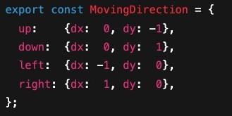
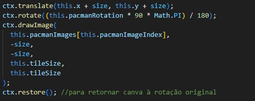

Imagine que o labirinto do Pac-Man é modelado como uma matriz
bidimensional, para este exemplo, uma grade 5×5. Cada célula tem
coordenadas [linha, coluna], onde “linha” é o eixo Y
(de cima para baixo) e “coluna” é o eixo X (da esquerda para a
direita), onde cada célula (tile) tem um valor indicando se é
parede, corredor ou ponto a ser consumido.
Posição do Pac-Man: [0,0]
Para as direções, utilizamos vetores e soma vetorial, representando cada direção (seta) com vetores unitários.

Observação: Para mover o personagem, basta somar esse
vetor, escalado pela velocidade, à posição atual - ao clicar em uma
das setas, somamos o vetor (dx, dy) à posição atual,
gerando [linha+dx, coluna+dy]. Se a nova posição
estiver dentro da matriz e não colidir com parede (valor 1 no mapa),
o movimento é válido.
Para dar um charme, acrescentamos um detalhe: conforme o PacMan segue uma direção, rotacionamos a imagem que o representa, utilizando as funções translate e rotate, que move o sistema de coordenada para o centro do pacman e rotaciona o canvas de acordo com o mesmo, respectivamente, baseadas em conteitos matemáticos.
No nosso labirinto, tratamos a linha como “Y” (vertical) e a coluna como “X” (horizontal). Assim:
[0,0] fica no canto superior esquerdo da
grade.
Por exemplo, a posição [3,1] significa “linha 3”
(quarto bloco de cima para baixo) e “coluna 1” (segundo bloco da
esquerda para a direita). Ao somar o vetor (1, 0) a
[3,1], chega em [4,1] (um bloco para
baixo). Ao somar (0, –1) a [3,1], chega em
[3,0] (um bloco para a esquerda).
Como isso ajuda na detecção de colisões: Se quisermos que o
Pac-Man coma uma “power pellet” na posição [2,3], basta
verificar se, ao chegar lá, o valor em map[2][3] indica
“pellet” (neste exemplo, um 0 normal), e então “remover” esse item
da matriz, trocando map[2][3] para outro valor (por
exemplo -1 para indicar que já foi consumido). Se fosse
uma parede (map[2][3] === 1), a colisão bloqueia o
movimento.
Para saber se o Pac-Man pode andar para uma célula, verificamos:
0 ≤ linha, coluna < 5, então há colisão com a
borda da matriz.
map[linha][coluna] tiver valor
1, significa que há uma parede e, portanto, o Pac-Man
não passa.
Status do último movimento: –
Quando há colisão, destacamos em vermelho a célula bloqueada e exibimos uma mensagem. Caso contrário, atualizamos a posição do Pac-Man.
Cada fantasma escolhe uma entre quatro direções fixas:
{ dx: -1, dy: 0 }, { dx: 1, dy: 0 }, { dx: 0, dy: -1 }, { dx: 0,
dy: 1 }. Esses pares (dx,dy) são vetores simples que indicam
“mover uma célula para cima”, “para baixo”, “para a esquerda” ou
“para a direita” na matriz.
Fantasma na posição: [2,2]
Vetores possíveis: (–1,0), (1,0), (0,–1), (0,1)
Último vetor escolhido: –
Explicação: Toda vez que clicamos em “Mover Fantasma”, ele
randomicamente escolhe um vetor (dx,dy) e aplica na sua
coordenada atual. Se o destino estiver livre (valor 0 no mapa), o
fantasma se move; caso contrário, permanece onde está.
1. Áreas em que o Pac-Man pode ou não se mover são destacadas ao clicar em “↑ ↓ ← →”. 2. O fantasma muda de cor se estiver cercado por paredes (exemplo visual de colisão). 3. Podemos mostrar as coordenadas em cada célula para reforçar o conceito de “grade XY”.
Clique para ver em cada célula qual é o par
[linha,coluna].